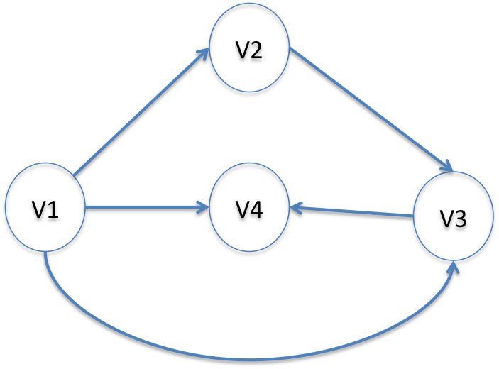

How do the GraphAdjList<K,E> and GraphAdjMatrix work<K,E>?
A graph is a set of vertices connected by edges. Unlike tree structures, a
graph can have any number of vertices with any number of edges connecting
them. In fact, a tree structure is just a special case of a graph.

Bridges represents graph structures in one of two ways: either using an
adjacency list representation or an adjacency matrix representation.
In the adjacency list representation, the GraphAdjList is holding a Map
of vertices associated with a linked list of the adjoining vertices.
In the adjacency matrix representation, the GraphAdjMatrix is mimicking a 2
dimensional array to describe which vertices are connected (Bridges actually uses nested Maps).
Typically, the reason to use one version over the other revolve around space
versus time trade offs. Since the GraphAdjList representation uses a linked
list to track neighboring nodes, searching for a particular neighbor is an
O(n) operation. The GraphAdjMatrix has O(1) access to any particular neighbor,
but it is essentially holding a two dimensional array. On sparse graphs, this
can waste a considerable amount of space.
AdjacencyGraph - Hello World
Bridges Visualization
- Once all your code is in order, run your file.
- Assuming all your code is correct and it compiles correctly, a link to the Bridges website will be generated.
- Copy/paste this link into your favorite browser to view a visualization of the data structure you’ve just created.
- It should look something like this:
Well done! You’ve just created your fifth Bridges project!